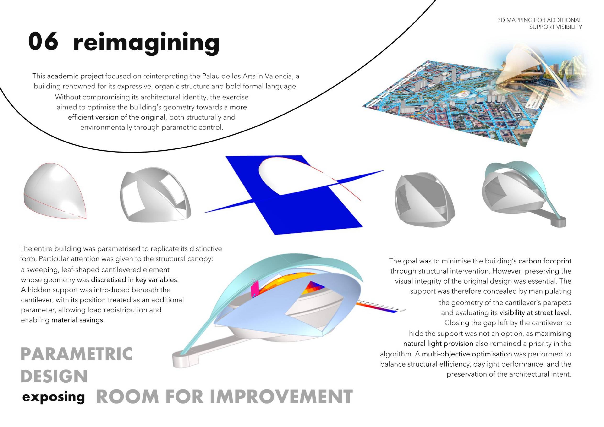
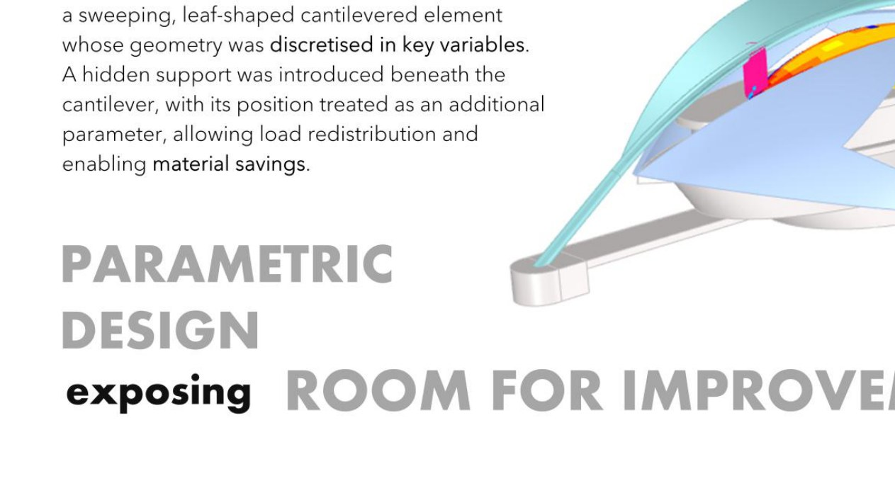
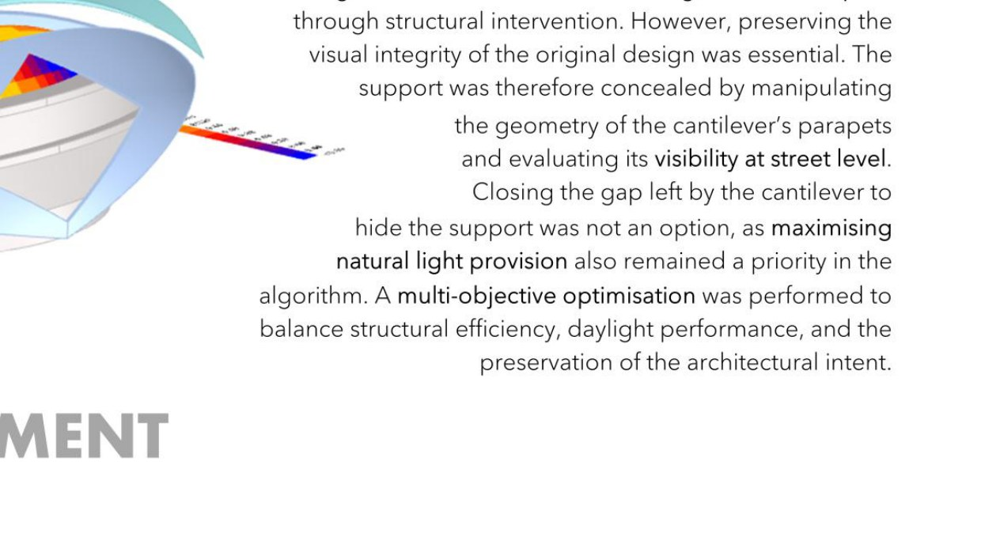

Project 06
This academic project focused on reinterpreting the Palau de les Arts in Valencia — a building renowned for its expressive organic structure and iconic canopy form. Without compromising its architectural identity, the exercise aimed to optimise the building's geometry towards a more efficient version of the original, both structurally and environmentally, through parametric control.
The entire building was parametrised to replicate its distinctive form. Particular attention was given to the principal canopy: a sweeping, leaf-shaped cantilevered element whose geometry was discretised in key variables. A hidden support was introduced beneath the cantilever, with its position mapped as an additional parameter — allowing load redistribution and enabling material savings.
The goal was to minimise the building's carbon footprint through structural intervention. However, preserving the visual integrity of the original design was essential. The support was therefore concealed by manipulating the geometry of the structure and evaluating its visibility at street level — parametric design exposing room for improvement.

The canopy geometry was broken down into a set of controllable parameters — curvature, span, depth and support position — each mapped to specific structural and environmental outcomes. This allowed the optimisation algorithm to explore a continuous design space rather than a discrete set of options.
The process revealed configurations that would be impossible to identify through manual iteration, and demonstrated how parametric tools can uncover performance gains hidden within the geometry of an existing design.


A multi-objective optimisation was performed to balance structural efficiency, daylight performance and the preservation of architectural identity. Hiding the support structure was not an option, as maximising natural light provision remained a priority in the algorithm.
The process navigated the trade-offs embedded in each decision — finding configurations where material savings, carbon reduction and visual integrity could coexist, demonstrating that parametric design is not just a tool for form-making, but a discipline for exposing and resolving structural room for improvement.